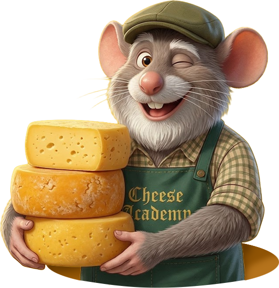
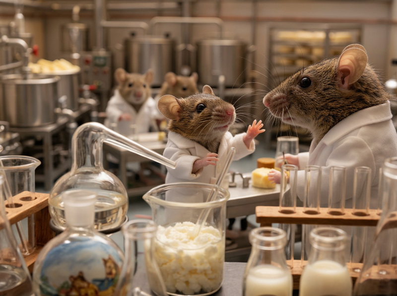
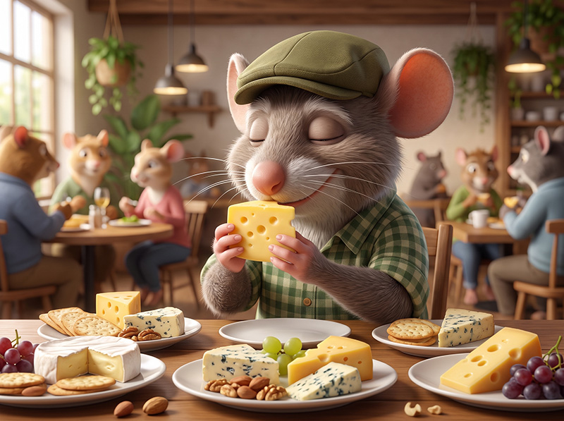
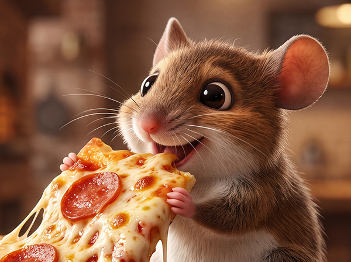

セカイを変えるチーズを作ろう
チーズ職人養成学校「チーズアカデミーTOKYO」について

チーズの素晴らしさを、自給自足を通じて、できるだけ多くの人に知っていただきたい。
そして、食卓にはいつもチーズがあった、あの頃の当たり前をこの手で取り戻したい。
そんな思いから、チーズ職人養成学校「チーズアカデミーTOKYO」は歩みを始めています。
卒業後、チーズ自給自足のバックアップはもちろんのこと、チーズ職人への就職・転職もサポートします。
未経験からでも始められる。多くの専門家や現役チーズ職人監修のカリキュラムで安心。
チーズアカデミーでは、本格的な農園を使った実地研修を行うことができます。プロとして活躍するチーズ職人も使用するような、広大で環境も整った農園を余すところなく使い、卒業時には本格的なチーズを自分の力で作れる実践力の養成を目指します。

チーズ作りには、しっかりとした食に関する知識が欠かせません。チーズアカデミーでは、一流講師陣による、チーズ作りに必要ないろはを余すところなく学べます。チーズそのものでなく、栄養学全般を学ぶことも可能ですので、チーズ以外への展開も夢ではないでしょう。

チーズアカデミーでは最後の2ヶ月間で卒業制作を実施。
卒業制作として、チーズ作りを実際に行います。卒業後、一般参加によるティスティング審査があるため、作り手の目線だけでなく、消費者の目線から、卒業制作作品としてのチーズを、しっかりと評価いただくことができます。

2027.4.1
チーズアカデミー卒業生のゴーダさんによるチーズだけをふんだんに使用した話題のピザ屋「Goda Pizza」が渋谷でオープン！
2027.3.18
チーズアカデミー卒業生のリコッタさんがチーズギークコンテストで2位に入選しました！
チーズアカデミーTOKYOへのアクセス
説明会お申し込み・お問い合わせ
ぜひ1度、足を運んでみませんか。説明会は随時開催中。
その他、お問い合わせもお気軽にどうぞ。お待ちしております。
※チーズアカデミーTOKYOは実在しません。問い合わせしても回答はありません。